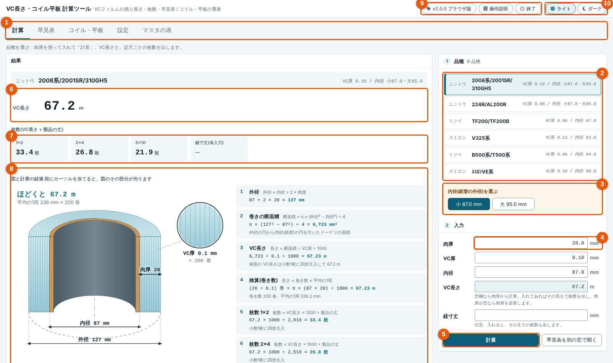
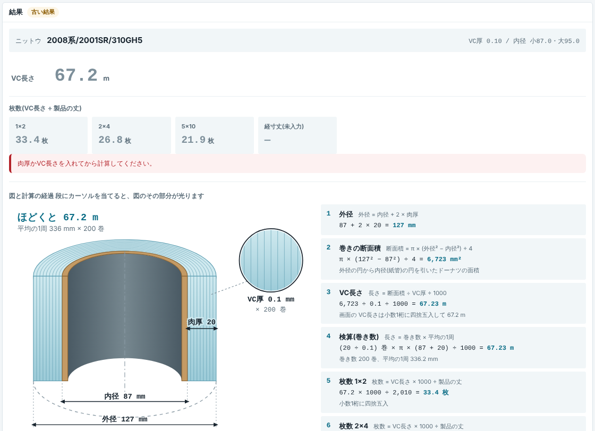
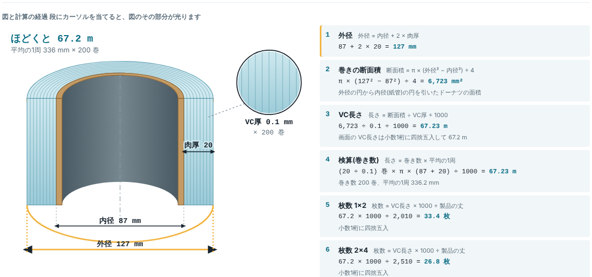
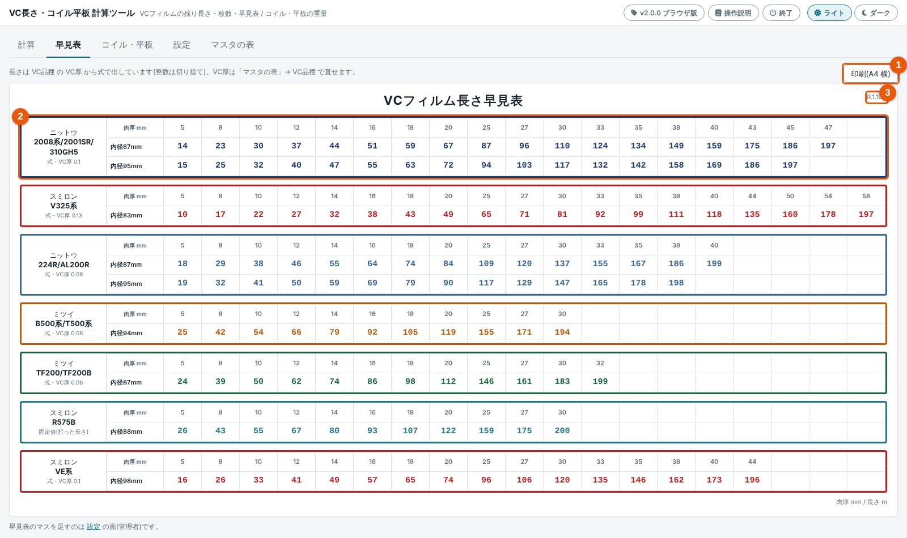
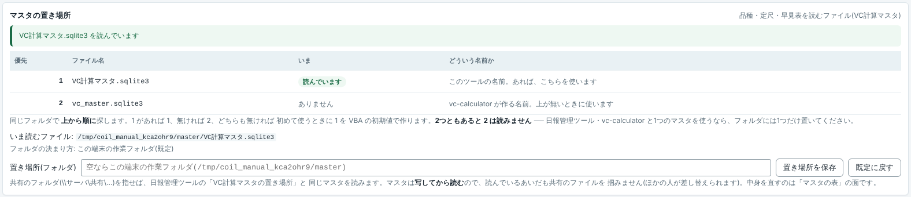
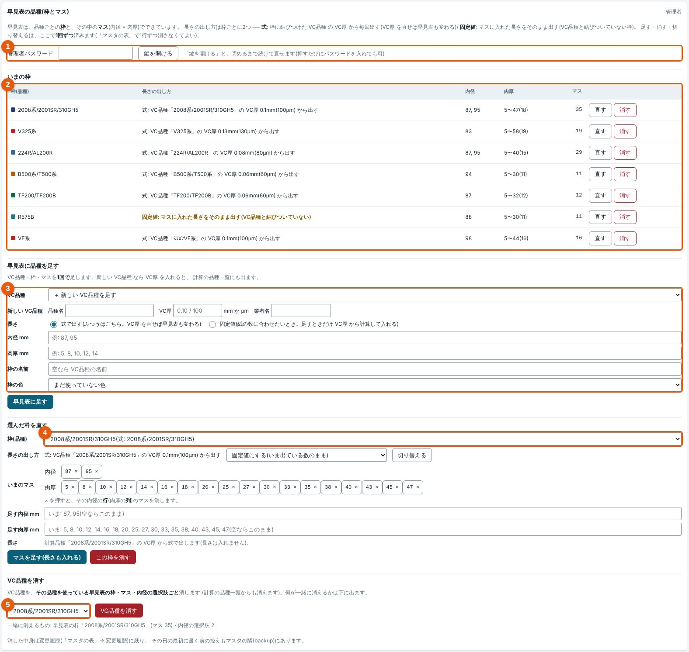
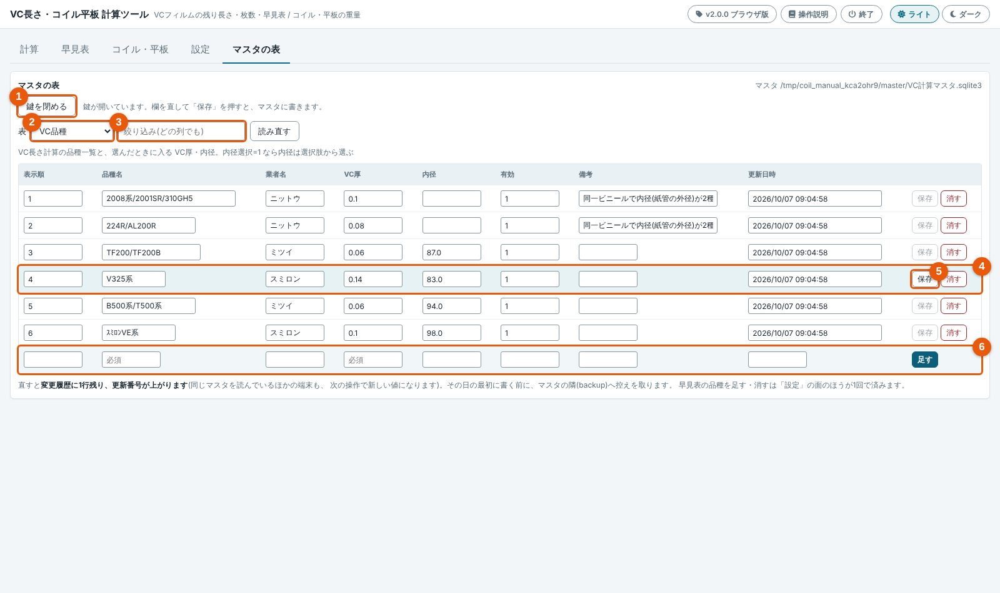

VC長さ計算の使い方
紙管に巻かれた VC フィルムの肉厚(巻いてある厚み)を測って入れると、残りの長さ(m)と、定尺(1×2・2×4・5×10)ごとに何枚の製品に貼れるかが出ます。VBA の「VC計算」「早見表」の画面と同じ式・同じ丸めです(日報管理ツールの「VC長さ計算」と同じもの)。
計算の面

| 番号 | 名前 | すること |
|---|---|---|
| 1 | 面の札 | 計算 / 早見表 / コイル・平板 / 設定 / マスタの表 を切り替えます。最後に見ていた面を覚えます |
| 2 | 品種 | 押すと、その品種の VC厚・内径が欄に入ります(品種の一覧は VC計算マスタから) |
| 3 | 内径を選ぶ | 同じビニールで内径(紙管の外径)が2種類ある品種のときだけ出ます。選ぶまで内径は空です |
| 4 | 入力欄 | 肉厚・VC厚・内径・VC長さ・経寸丈(任意)。計算で入った欄は色が付きます |
| 5 | 計算 | 押すと計算します(Enter でも)。「早見表を別の窓で開く」で早見表だけの窓が開きます |
| 6 | VC長さ | 残りの長さ(m、小数1桁) |
| 7 | 枚数 | 定尺ごとの枚数(VC長さ ÷ 製品の丈)。経寸丈を入れると、その丈での枚数も出ます |
| 8 | 図と計算の経過 | 巻いたロールの図と、式に数字を入れた途中の計算 |
| 9 | 版・操作説明・終了 | いま使っている版と、この説明書(版の見方)。「終了」はブラウザ版だけ |
| 10 | 背景の切替 | ライト / ダーク |
計算のしかた
- 2 で品種を押します。VC厚と内径が入ります。
- 3 が出たら、内径(小 87.0 / 大 95.0 など)を押します。
- 4 の肉厚に、測った厚み(mm)を入れます。
- 5 の計算を押すと、6 VC長さ と 7 枚数 が出ます。

図と計算の経過
計算すると、結果の下に巻いたロールの図と計算の経過(式・数字を入れた式・答え)が出ます。経過の段にマウスを当てると、図のその部分が光ります。

早見表
肉厚(列)と内径(行)から長さ(m)を引く表です。計算と同じ式で出しています(整数への丸めは マスタの「早見表の丸め」= 切り捨て / 四捨五入)。

- 印刷: 「印刷(A4 横)」を押します。枠の途中では紙を切りません。
- 別の窓: 計算の面の「早見表を別の窓で開く」で、早見表だけの窓が開きます(計算と並べて見られます)。
- 枠の左に「式・VC厚 0.1」とあれば VC品種 の VC厚 から出しています。「固定値(打った長さ)」はマスに入れた長さをそのまま出しています(設定で切り替えられます)。
設定
マスタの置き場所
品種・定尺・早見表は VC計算マスタ(VC計算マスタ.sqlite3)から読みます。どのフォルダのどのファイルを読んでいるかが出ます。

| フォルダの決まり方 | いつ |
|---|---|
| この端末で決めたフォルダ | この面で保存したとき(この端末だけ。%LOCALAPPDATA%\CoilCalculator\settings.json) |
| 配布のときに決めたフォルダ | 配る人が make_dist.bat --vc-master-dir \\サーバ\共有\… で決めたとき |
| この端末の作業フォルダ(既定) | どちらも無いとき(%LOCALAPPDATA%\CoilCalculator\master。初めて使うときに VBA の初期値で作ります) |
フォルダを入れて「置き場所を保存」を押します(管理者パスワードが要ります)。「既定に戻す」で、配布のときのフォルダ(無ければ作業フォルダ)に戻ります。
早見表の品種(枠とマス)

- 品種を足す: VC品種(新しくても可)・枠・マス(内径 × 肉厚)を1回で足します。新しい VC品種 は計算の品種一覧にも出ます。
- 選んだ枠を直す: マス(内径・肉厚)を足す、× で行・列を消す、長さの出し方(式 / 固定値)を切り替える、枠を消す。
- VC品種を消す: その品種を使っている枠・マス・内径の選択肢ごと消します。何が一緒に消えるかが先に出ます。
VC厚 は mm(0.10)でも μm(100)でも入れられます。
管理者パスワード
マスタの表
VC計算マスタの表(VC品種・VC内径選択肢・枚数定尺・早見表ブロック・早見表値・アプリ設定・変更履歴)を見ます。鍵を開けると、1行ずつ直せます。

- 直した行は色が付き、「保存」が押せるようになります。押すとマスタに書き、計算・早見表にもすぐ効きます。
- 見出しを押すと並べ替えます(数は数として)。一度に出すのは 200 行までで、それより多いときは数で知らせます。
- 変更履歴は見るだけです(直すたびに自動で1行増えます。誰が・いつ・何を・前の値)。アプリ設定は値だけ直せます(行は足せません・消せません)。
- 決まった言葉しか効かない値は、違う言葉を断ります(肉厚の逆算 = 1 / 0、早見表の丸め = 切り捨て / 四捨五入、枠色)。
- ほかの表で使われている品種は消せません。消すときは「設定」→ VC品種を消す なら1回で消せます。
鍵と管理者パスワード
マスタの置き場所・早見表の品種・マスタの表を直すには、管理者パスワードを入れて「鍵を開ける」を押します。開けると、終了するか「鍵を閉める」まで、続けて直せます(「設定」と「マスタの表」で同じ鍵です)。
既定のパスワードは日報管理ツールと同じです。配る人が make_dist.bat --admin-password … で決めることも、「設定」→ 管理者パスワード でこの端末だけ変えることもできます(平文では持ちません)。
計算式
| 出すもの | 式 |
|---|---|
| 外径(mm) | 内径 + 2 × 肉厚 |
| 巻きの断面積(mm²) | π × (外径² − 内径²) ÷ 4 |
| VC長さ(m) | 断面積 ÷ VC厚 ÷ 1000(小数1桁に四捨五入) |
| 枚数 | VC長さ × 1000 ÷ 製品の丈(小数1桁に四捨五入) |
| 肉厚(逆算) | (√(VC長さ × 1000 × VC厚 × 4 ÷ π + 内径²) − 内径) ÷ 2 |
丸めは VBA の Format と同じ(15桁で四捨五入)です。